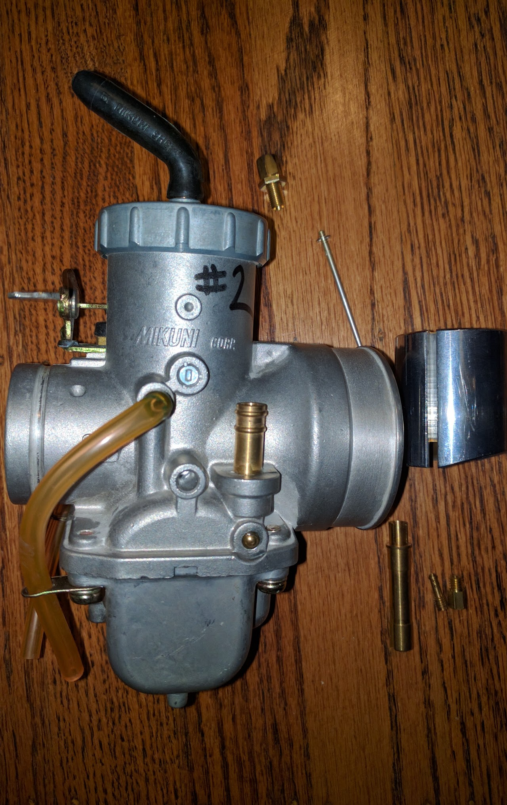

I like to tweak my XRs with period parts, so I stay away from the more performant and modern set-ups such as flat slides and accelerator pumps. A good Mikuni VM 36 or 38mm round slide keeps it all the way it would have been back in the day.
Now the best source for a Mikuni VM is one that comes from a 2-stroke bike. BUT, the settings of a 2-stroke are VERY different from what a 4-stroke needs.
Geniuses and magicians have spent years testing and refining the settings to make an XR500 roar. I took a simple route to get my settings right.